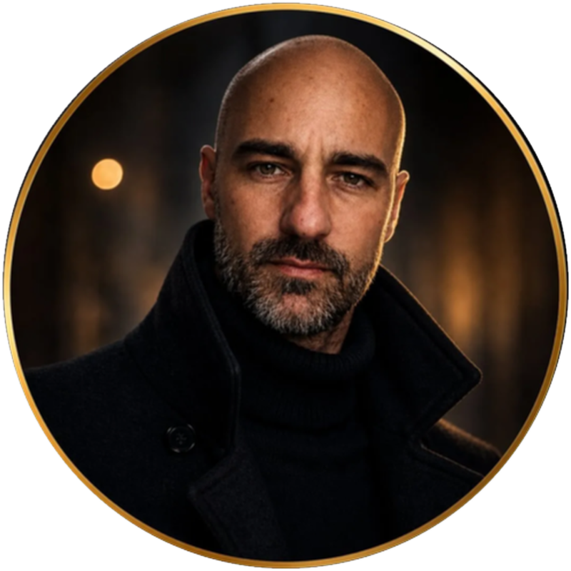

01 / FINANCE↗
₿
Peníze
Najít cestu k vyšším příjmům a získat větší kontrolu nad vlastními financemi.
VÍC MOŽNOSTÍ↗
PRO CHLAPY, KTEŘÍ VĚDÍ, ŽE MAJÍ NA VÍC
90 dní osobního vedení, které ti pomůže srovnat priority, nastavit disciplínu a posunout se tam, kam už dlouho chceš.

Možná chceš vydělávat víc. Cítit se líp ve svém těle. Mít konečně disciplínu a přestat odkládat věci, na kterých ti záleží.
Nemusíš mít všechno vyřešené, než začneš. Potřebuješ vědět, kde stojíš, kam chceš dojít a co uděláš jako další krok.
Nechci z tebe udělat někoho jiného.
Chci z tebe dostat chlapa, který v tobě je.
Každý má jiné priority. Společně najdeme, kde má smysl začít právě u tebe.
Najít cestu k vyšším příjmům a získat větší kontrolu nad vlastními financemi.
Trénink, jídlo, režim a návyky, které ti pomohou cítit se lépe.
Ujasnit si priority, pracovat se strachem a dělat rozhodnutí s čistou hlavou.
Nastavit systém, který tě podrží i ve dnech, kdy se ti zrovna nechce.
Nečekej motivační řeči, které za dva dny vyšumí. Čeká tě konkrétní práce a průběžná podpora.
Probereme současnou situaci, co ti funguje, co tě brzdí a co chceš změnit.
Vybereme priority a rozdělíme velké cíle na zvládnutelné kroky.
Budeš mít jasné další kroky, pravidelné vyhodnocení a prostor řešit překážky.
Jsem Lukáš. Věřím, že změna nezačíná dokonalým plánem, ale rozhodnutím přestat stát na místě. Společně se zaměříme na to, co je důležité právě pro tebe — bez univerzálních návodů a prázdných slibů.
Pojďme to probrat ↗Napiš mi, co chceš změnit. Probereme, jestli je 90denní vedení správná cesta právě pro tebe.
Domluvit úvodní rozhovor ↗